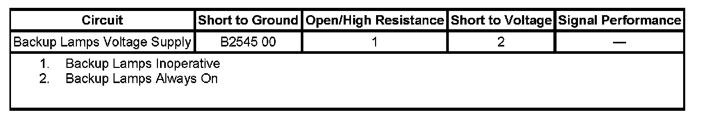

B2545
DTC B2545
DTC DESCRIPTOR
DTC B2545 00
Backup Lamps Circuit
DIAGNOSTIC FAULT INFORMATION

Perform the Diagnostic System Check - Vehicle prior to using this diagnostic procedure. Initial Inspection and Diagnostic Overview
CIRCUIT/SYSTEM DESCRIPTION
When the PRNDL is placed in the REVERSE position, a signal is sent to the body control module (BCM). The BCM then applies voltage through the backup lamps relay control circuit to the BACK/UP lamp relay in the underhood fuse block, inside rearview mirror, and rearview camera module. The BACK/UP lamp relay then illuminates the backup lamps.
CONDITIONS FOR RUNNING THE DTC
- The ignition is ON.
- The backup lamps must be commanded ON.
CONDITIONS FOR SETTING THE DTC
The BCM detects a short to ground on the backup lamp relay control circuit when the backup lamps are being commanded ON.
ACTION TAKEN WHEN THE DTC SETS
The backup lamps do not illuminate.
CONDITIONS FOR CLEARING THE DTC
- The conditions for setting the DTC are no longer present.
- A history DTC clears after 100 malfunction-free ignition cycles.
- The BCM receives the clear code command from the scan tool.
CIRCUIT/SYSTEM VERIFICATION
Ignition ON, activate the Backup Lamps output control on the scan tool. The Backup Lamps parameter in the data list should display On and the backup lamps should illuminate.
CIRCUIT/SYSTEM TESTING
1. Ignition OFF, disconnect the underhood fuse block connector C5, inside rearview mirror, and rearview camera module (if equipped) that are in the circuit.
2. Ignition OFF, disconnect the BCM harness connector C2 and test for a ground signal at the connector terminal 22.
- If the circuit exhibits a ground signal, repair the short to ground in the control circuit.
3. Reconnect the inside rearview mirror and test the BCM harness connector C2, terminal 22 again for ground.
- If the circuit now exhibits a ground signal of 20 ohms or less, replace the inside rearview mirror.
4. Reconnect the underhood fuse block connector and test the BCM harness connector C2, terminal 22 again for ground.
- If the circuit now exhibits a ground signal of 20 ohms or less, replace the underhood fuse block.
5. If equipped, reconnect the rearview camera module and test the BCM harness connector C2, terminal 22 again for ground.
- If the circuit now exhibits a ground signal of 20 ohms or less, replace the rearview camera module.
- If the circuit does not exhibit a ground, replace the BCM.
REPAIR INSTRUCTIONS
Perform the Diagnostic Repair Verification after completing the diagnostic procedure.
- Underhood Electrical Center or Junction Block Replacement
- Control Module References for BCM, inside rearview mirror, and rearview camera module replacement, setup, and programming. Verification Tests Programming and Relearning